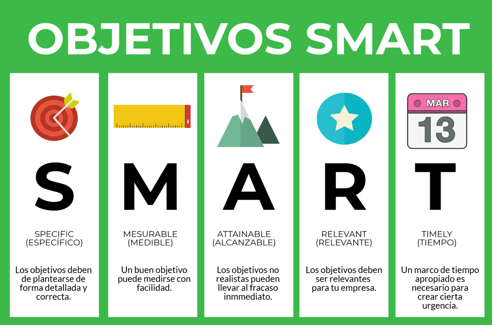

Projecte de Transformació Digital
1. Introducció
A l’inici del curs hem tractat els conceptes de digitalització i transformació digital, i vam dir que són termes relacionats però que fan referència a conceptes diferents: mentre que la digitalització es refereix al procés de convertir elements físics en digitals, la transformació digital implica una revisió integral de l’organització per a transformar al màxim les seues capacitats digitals i generar canvis significatius en la forma en què opera i es relaciona amb els seus clients. La transformació digital és un procés estratègic i a llarg termini que va més enllà de l’adopció de tecnologies digitals.
En aquesta unitat abordarem el disseny d’un projecte de transformació digital i, en consonància amb l’anterior, hem de tindre molt present que aquest projecte no es limita a introduir elements digitalitzadors en l’empresa, sinó que es busca un canvi en els processos i en les metodologies que s’han vingut utilitzant.
El procés de transformació digital sovint acaba reduint-se a un breu procés de digitalització d’algunes parts del negoci. Açò moltes vegades no genera els resultats desitjats o fins i tot acaba produint efectes contraris.
Per aquest motiu, és molt important assumir que la implicació en el procés de transformació digital ha de ser completa, encara que siga necessari dissenyar un calendari menys ambiciós del que es plantejava inicialment per a algunes parts de l’empresa.
A mode de resum, per a evitar que el disseny del projecte de transformació digital acabe sent un projecte de digitalització, repassem les diferències entre ambdós en el següent quadre:
Diferències entre projecte de digitalització i projecte de transformació digital
| Aspecte | Projecte de digitalització | Projecte de transformació digital |
|---|---|---|
| Abast | Enfocament en àrees específiques de l’empresa. | Enfocament ampli que abasta diversos aspectes de l’empresa. |
| Objectius | Millora de l’eficiència i productivitat mitjançant tecnologies digitals. | Canvis estratègics per a adaptar-se a les tendències digitals i millorar la competitivitat. |
| Enfocament | Operatiu i funcional. | Holístic, abasta cultura, estratègia, processos i models de negoci. |
| Implementació | Implementació d’eines tecnològiques específiques. | Transformació integral de l’empresa, incorporant la tecnologia en tots els aspectes. |
| Canvi cultural | Enfocament limitat a la millora de processos. | Profund canvi cultural que fomenta la innovació i l’adaptabilitat. |
| Impacte en models de negoci | Enfocament en millores operatives. | Replantejament de models de negoci existents o creació de nous models. |
| Abast temporal | Pot tindre un abast més acotat i temps d’implementació més curts. | Té un abast més ampli i pot requerir un període d’implementació més llarg. |
2. Els objectius del projecte
Establir objectius en un pla de transformació digital és indispensable per a ajudar a definir i comunicar de manera precisa cap a on es dirigeix la iniciativa. A més, facilita l’adaptabilitat, l’aprenentatge continu i la gestió d’expectatives, creant un marc estructurat per al progrés incremental.
Per aquest motiu, el nostre primer pas en el disseny del projecte de transformació digital serà definir els objectius. Per a això, podem ajudar-nos de la metodologia OKR.
OKR
OKR: objectius i resultats clau (Objectives and Key Results).
2.1. Metodologia OKR
La metodologia OKR és un marc de gestió d’objectius utilitzat per a establir i comunicar metes clares i mesurables dins d’una organització. Va ser popularitzada als anys noranta per empreses tecnològiques com Intel i Google, i s’ha adoptat àmpliament en diversos sectors (Toyota, P&G…).
En termes simples, un objectiu és una declaració qualitativa que descriu el que una organització, equip o individu vol aconseguir en un període específic. Els resultats clau són mesures quantitatives específiques que indiquen el progrés cap a l’assoliment de l’objectiu.
Els OKR són coneguts per la seua simplicitat, transparència, alineació i agilitat.
Una manera molt senzilla d’aprendre a formular els OKR és fer ús de la següent estructura sintàctica:
Assoliment de [objectiu (O)] mesurat a través de [resultat clau (KR)]
La principal finalitat d’aquesta metodologia és adaptar les formes de treball en l’organització perquè ajuden a assolir les metes proposades, adequant-les a la realitat. Es pot dir que busca un canvi de mentalitat de què fem i què podem a què fem possible.
Una de les claus de l’èxit d’aquesta metodologia és que s’adapta fàcilment a escenaris molt diversos perquè és flexible. Precisament aquesta flexibilitat és la que ha de prevaldre a l’hora de ser aplicada, ja que utilitzar un enfocament rígid podria conduir al fracàs.
No obstant això, sobretot perquè s’introduïsca en aquesta metodologia, és convenient seguir una sèrie de regles bàsiques que establisquen com funcionaran els OKR en l’organització. Per a això es consideraran els següents aspectes fonamentals:
- La freqüència amb què es fixen els OKR (mensual, trimestral…). El més recomanable sol ser anual, però dependrà de la rapidesa amb què avance l’empresa: com major siga la velocitat, major freqüència caldrà aplicar.
- La freqüència amb què es revisen els objectius, que haurà d’estar en consonància amb l’anterior. Els objectius grans i a llarg termini es revisaran cada mes, però els xicotets i ràpids poden requerir revisions setmanals o fins i tot diàries.
- Els responsables de la creació dels OKR, que poden ser els líders, els empleats o ambdós. Dependrà de com es vulga plantejar en l’organització. L’ideal a l’hora de formular els OKR que s’utilitzaran en un projecte és implicar tot el món.
La metodologia OKR és un procés cíclic que consta dels passos següents:
1. Definició d’objectius
Aquesta fase és fonamental, ja que estableix la direcció que seguirà tota l’organització o equip específic.
Els objectius han de ser ambiciosos i desafiadors, dissenyats per a impulsar l’empresa o equip fora de la seua zona de confort cap a assoliments significatius. Tanmateix, és crucial que aquests objectius també siguen assolibles, ja que, en cas contrari, poden resultar contraproduents i minar la motivació dels participants.
Els objectius han de ser inspiradors i proporcionar un nord clar per a les accions i decisions futures. Cal esforçar-se a dissenyar-los de manera que es puga comprovar clarament si s’han assolit o no al finalitzar cada cicle d’OKR.
Alguns exemples d’objectius podrien ser:
- Llançar un nou format d’un producte.
- Augmentar un 10 % les xifres de venda anuals a través de la botiga en línia.
- Reduir la petjada de carboni.
- Aconseguir que un 20 % dels empleats tinguen un nivell alt en anglés.
2. Determinació de resultats clau
Una vegada els objectius estan establerts, el pas següent és la determinació dels resultats clau, que són indicadors específics i mesurables de l’èxit.
Poden ser tant qualitatius com quantitatius, encara que és molt recomanable que siguen quantitatius per a facilitar l’avaluació objectiva del progrés cap a l’objectiu. Aquesta quantificació permet un seguiment clar i ajuda a ajustar les estratègies en temps real si es desvien del curs desitjat.
Cada objectiu ha de tindre associats diversos resultats clau que, conjuntament, dibuixen una imatge completa de com s’aconseguirà.
Per a definir fàcilment un resultat clau s’utilitza el mètode SMART.
Mètode SMART
-
S - Específic (Specific) Està ben definit i clar per a tots.
-
M - Mesurable (Measurable) Es pot mesurar amb facilitat.
-
A - Assolible (Achievable) Pot complir-se en el termini establit.
-
R - Rellevant (Relevant) És rellevant per a aconseguir l’objectiu.
-
T - Limitat en el temps (Time-bound) Està emmarcat temporalment.
 Per exemple, per a l’objectiu Aconseguir que un 20 % dels empleats tinguen nivell alt en anglés, definit en el pas anterior, alguns resultats clau podrien ser:
- Superar les proves de certificació d’anglés dels empleats durant sis mesos.
- Celebrar una reunió de treball mensual en la qual es parle només en anglés.
- Concedir una bonificació salarial a aquells que aconseguisquen la certificació d’idioma B2 o superior abans de finals d’any.
Errors comuns en definir els OKR
| Error | Descripció |
|---|---|
| No comptar amb tot l’equip | És recomanable que tots se senten part del canvi. |
| No tindre clara la meta | És fonamental una visió clara d’on estem i cap a on volem anar. |
| Crear OKR massa ambiciosos | És millor redefinir objectius senzills que no aconseguir objectius ambiciosos i desmotivadors. |
| Crear massa OKR | Ha de prevaldre la qualitat sobre la quantitat. |
3. Planificació d’iniciatives
En aquesta etapa s’identifiquen i organitzen les accions específiques, els recursos i les responsabilitats necessàries per a assolir els resultats clau i, en última instància, els objectius.
Cada resultat clau es descompon en tasques o projectes més xicotets i manejables. Aquesta descomposició ajuda a identificar quines accions específiques contribuiran a l’assoliment de cada resultat clau.
Es du a terme una pluja d’idees amb l’equip per a generar possibles formes d’aconseguir els resultats clau. En aquesta etapa és important considerar totes les opcions, fins i tot les que pareguen menys convencionals.
S’avaluen les iniciatives proposades segons el seu impacte potencial, la viabilitat i els recursos requerits, i se seleccionen les més prometedores (les que s’espera que tinguen major impacte). La priorització és clau, ja que intentar fer massa coses alhora pot dispersar els esforços i diluir l’impacte desitjat.
A continuació, s’assignen les iniciatives seleccionades a equips o individus específics. Aquesta assignació ha de tindre en compte les habilitats i capacitats del personal, així com la càrrega de treball que ja tenen i que es preveu que puguen assumir.
Per a cada iniciativa cal establir terminis realistes, que siguen prou ajustats per a mantindre la urgència i l’impuls, però també realistes per a evitar la sobrecàrrega.
Amb tot això s’elabora un pla d’acció detallat per a cada iniciativa, incloent-hi passos específics, recursos necessaris, fites intermèdies i mètriques de seguiment. També convé contemplar contingències per a les possibles respostes a obstacles o desafiaments que puguen sorgir durant la implementació i que previsiblement s’hauran valorat.
El pla d’acció ha de comunicar-se a tots els membres de l’equip involucrat. És crucial que, a més d’estar informats i conèixer els seus rols individuals, siguen conscients de com les seues accions contribuiran, en major o menor mesura, a l’objectiu més ampli.
4. Implementació d’iniciatives
La fase d’implementació d’iniciatives és on es duen a terme les accions planificades per a aconseguir els resultats clau i, en última instància, els objectius establerts dins del marc dels OKR. Aquesta fase és crucial, ja que és on es materialitzen els plans i s’avança cap a l’assoliment dels resultats desitjats.
És fonamental que els equips treballen junts de manera coordinada i col·laborativa per a garantir que les iniciatives avancen sense problemes. La comunicació oberta i regular és clau per a mantindre tots informats i alineats. Açò ajuda a mantindre a tots compromesos i fomenta una cultura de col·laboració.
5. Seguiment i avaluació de resultats clau
Aquesta fase permet monitoritzar el progrés cap als resultats clau i avaluar l’efectivitat de les iniciatives implementades en la fase anterior.
La monitorització parteix d’un seguiment continu del progrés. En aquest sentit, es programaran reunions regulars per a revisar el progrés cap als resultats clau i discutir l’estat de les iniciatives. Aquestes revisions solen realitzar-se de manera setmanal o quinzenal, depenent de la duració del cicle OKR.
Durant aquestes reunions, els equips compartixen actualitzacions sobre el progrés de les iniciatives, identifiquen possibles obstacles i discutixen solucions per a superar-los.
Per a mesurar el progrés cap als resultats clau s’utilitzen mètriques i KPI específics. Aquestes mètriques han de ser rellevants, quantificables i estar alineades amb els objectius establerts. Una forma molt senzilla d’aprendre a formular els KPI és fer ús de l’estructura sintàctica que es mostra a continuació:
Sintaxi d’un KPI
[objectiu] + [període] + [freqüència] + [font de les dades]
Exemple: Aconseguir un 4,5/5 en la valoració de l’atenció a l’usuari en el pròxim trimestre, a un ritme mitjà de 0,5 punts/mes. S’utilitzaran les valoracions reflectides pels compradors en la pàgina web.
Es poden utilitzar eines de seguiment i gestió de projectes per a registrar i visualitzar el progrés de les iniciatives de manera clara i accessible per a tots els membres de l’equip, així com com a font de les dades que es veuran involucrades en els KPI que definim.
Si durant el seguiment s’observen desviacions entre el progrés real i l’esperat cap als resultats clau, cal investigar les causes d’aquestes desviacions i identificar possibles accions correctives.
Vocabulari
KPI (Key Performance Indicator): indicador clau de rendiment.
6. Reflexió
La informació recollida en la fase anterior és la base per a començar un procés de reflexió que permeta als equips i organitzacions aprendre de les seues experiències i millorar contínuament.
Una vegada s’avaluen els assoliments aconseguits durant el cicle OKR en relació amb els resultats clau i els objectius establerts, s’identifiquen i celebren els èxits obtinguts, reconeixent el bon treball i el compromís de l’equip.
També s’examinen les desviacions entre el progrés real i l’esperat cap als resultats clau. S’investiguen les causes d’aquestes desviacions per a comprendre què va funcionar bé i què no, identificant lliçons apreses per al futur.
En aquest punt s’anima els membres de l’equip a reflexionar sobre les seues experiències durant el cicle OKR. Es compartixen aquestes reflexions en reunions d’equip per a obtindre una comprensió més completa del que ha funcionat bé i del que es pot millorar.
És fonamental que aquestes reflexions es documenten de manera formal perquè estiguen disponibles per a futurs cicles OKR. Açò pot incloure la creació d’un repositori de coneixements o l’elaboració d’informes de lliçons apreses.
7. Ajust i nova planificació
Basant-se en les lliçons apreses i els resultats del cicle anterior, s’establixen nous OKR per al pròxim període. Es definixen objectius ambiciosos però realistes que reflectisquen les prioritats de l’organització i promoguen un creixement i èxit continu.
També cal revisar i actualitzar l’estratègia global de l’organització en funció de les lliçons apreses i les oportunitats identificades, establint plans d’acció clars i mesurables per a aconseguir els nous objectius.
Amb aquests ajustos ja establerts, estem preparats per a començar un nou cicle.
Comparativa OKR vs KPI
| OKR - Objectius i resultats clau | KPI - Indicadors clau de rendiment | |
|---|---|---|
| Definició | Objectius concrets amb components mesurables | Grau de compliment dels objectius |
| Base | Basat en les metes i aspiracions de l’empresa | Basat en resultats anteriors i projectes actuals |
| Criteris | Mesura objectius més audaços i agressius | Mesura l’estabilitat i els punts de referència |
| Propòsit | Servix com a eina motivacional | Servix com a eina d’avaluació del rendiment |
| Duració | Sol ser trimestral o anual | És variable |
| Variació | Canvia en cada cicle | Mètriques que romanen sense canvis durant mesos |
Navega
En aquest vídeo, Judit Català ens explica breument què és un KPI, especialment centrat en el món del màrqueting.
3. El valor del negoci
Hem vist que un element fonamental per a emprendre el pla de transformació digital és definir els objectius i també, com no, a través de la metodologia OKR, podem articular junt amb els KPI per a repetir el cicle les vegades que siga necessari.
L’elaboració d’OKR i KPI no és un pas trivial, i exigix un coneixement profund del negoci, per la qual cosa ara posarem el focus en comprendre el valor del nostre negoci, com impacta en la transformació digital i com podem accelerar aquest procés.
3.1. Model canvas
El model canvas (business model canvas) és una eina que s’utilitza habitualment durant el procés de planificació estratègica, el desenvolupament de nous negocis o la revisió de models existents.
El seu disseny visual permet als equips tindre una comprensió compartida i ràpida de com funciona un negoci o projecte i com pot evolucionar per a adaptar-se als canvis. A més, és una eina dinàmica que es pot ajustar i actualitzar segons siga necessari al llarg del temps.
La base d’aquest model és un llenç estructurat que rep el nom de canvas. Aquest llenç està compost per una matriu amb nou caselles, en cadascuna de les quals es representarà un aspecte fonamental d’un model de negoci.
Aquests elements serviran com a esquelet del projecte. A continuació, veurem en què consistix cadascun d’ells i com crear-los.
Segments de clients (customer segments)
Aquest bloc se centra en identificar i definir els diferents grups de persones o empreses a les quals l’empresa intenta servir. Identificar els segments de clients adequats és crucial perquè ajuda l’empresa a adaptar la seua proposta de valor, canals de distribució i estratègies de màrqueting de manera efectiva.
Passos per a crear aquest bloc:
- Identificació del mercat objectiu: definim qui són els nostres clients ideals i analitzem les seues necessitats i problemes.
- Segmentació del mercat: dividim el nostre mercat objectiu en grups més menuts basats en característiques demogràfiques, geogràfiques, psicogràfiques i conductuals.
- Perfilat de clients: desenvolupem perfils detallats dels nostres clients ideals, incloent informació com nom, edat, ocupació, desitjos i objectius.
- Priorització de segments: avaluem i prioritzem els segments de clients segons la importància estratègica que tinguen per al nostre negoci.
- Avaluació contínua: obtenim retroalimentació del client i realitzem una anàlisi competitiva per a ajustar el nostre enfocament segons les necessitats canviants del mercat.
Exemple de segments de clientes per a una empresa de desenvolupament d’aplicacions: * Joves professionals interessats en aplicacions de productivitat. * Empreses que busquen solucions personalitzades per a la gestió de projectes. * Estudiants universitaris que utilitzen aplicacions educatives.
Proposta de valor (value proposition)
Aquest bloc busca definir els beneficis i el valor únic que el teu producte o servei oferix als segments de clients. La proposta de valor és essencial per a diferenciar l’oferta i atraure els clients.
Passos per a crear aquest bloc:
- Entendre les necessitats del client: investiguem a fons les necessitats i desafiaments dels nostres clients.
- Identificar característiques i beneficis clau: enumerem les característiques úniques de la nostra oferta i les traduïm en beneficis tangibles per als clients.
- Definir valor únic i diferenciadors: definim clarament la proposta única de valor (PUV) i els elements que ens diferencien en el mercat.
- Validació amb clients: realitzem proves de concepte i busquem retroalimentació contínua per a ajustar i millorar la proposta de valor.
Exemple de proposta de valor per a una empresa de desenvolupament d’aplicacions: * Aplicacions fàcils d’utilitzar que milloren la productivitat diària. * Solucions personalitzades que s’adapten a les necessitats específiques de cada client. * Suport tècnic 24/7 per a garantir una experiència sense problemes.
Canals de distribució (channels)
Aquest bloc definix la manera com l’empresa entrega la seua proposta de valor als clients. Inclou la definició dels diferents punts de contacte i canals a través dels quals els clients poden conèixer, adquirir i utilitzar els productes o serveis de l’empresa.
Passos per a crear aquest bloc:
- Anàlisi del comportament del client: comprenem com els nostres clients preferixen interactuar i comprar, examinant els seus comportaments tant en línia com fora de línia.
- Selecció de canals adequats: identifiquem els canals que millor s’adapten a la nostra proposta de valor i al comportament dels nostres clients (vendes directes, distribuïdors, botigues online, xarxes socials…).
- Integració de canals: considerem com els nostres canals poden treballar junts per a crear una experiència fluida per al client que millore el seu grau de satisfacció.
- Canals de màrqueting i comunicació: pensem en com utilitzem els canals de màrqueting i comunicació per a arribar als nostres clients (publicitat en línia, xarxes socials…).
- Estratègies de e-commerce: considerem estratègies específiques per a canals en línia, com plataformes de comerç electrònic, aplicacions mòbils o marketplaces.
- Aliances estratègiques: explorem la possibilitat d’establir sinergies amb altres empreses per a ampliar els canals de distribució o reduir costos en aquest aspecte.
Exemples: * Botiga en línia pròpia. * Xarxes socials (Instagram, Facebook…). * Plataformes de comerç electrònic (Amazon, eBay…).
Relacions amb els clients (customer relationships)
Aquest bloc se centra en com l’empresa establix i manté connexions amb els seus clients al llarg del cicle de vida del client.
Açò fa que siga vital per a construir relacions sòlides, comprendre les expectatives del client i proporcionar un servei que garantisca la satisfacció i la fidelitat.
Passos per a crear aquest bloc:
- Comprendre les expectatives del client: investiguem per a comprendre les expectatives, necessitats i desitjos dels nostres clients. És essencial per a millorar les nostres relacions amb ells.
- Segmentació de clients: considerem la diversitat dels nostres clients i adaptem les estratègies de relació segons cada grup. Un enfocament personalitzat sol ser clau.
- Canal de comunicació preferit: identifiquem els canals de comunicació preferits pels nostres clients. Alguns poden preferir el contacte en persona, mentre que altres poden optar per la interacció per telèfon, correu electrònic, xat, etc.
- Nivells de servei: Definim els nivells de servei que oferirem als diferents segments de clients. Açò pot incloure serveis postvenda, suport tècnic o assessorament, entre altres.
- Personalització: Oferim, sempre que siga possible, un enfocament personalitzat, ja que es tracta d’un factor important per a millorar l’experiència del client i enfortir la relació.
- Gestió de reclamacions i incidències: Establim els mecanismes per a abordar problemes i queixes de manera eficient. La gestió proactiva pot convertir problemes en oportunitats de fidelització.
- Programes de fidelització: Valorem la implementació de programes de fidelització per a recompensar els clients fidels i fomentar la repetició de negocis.
- Automatització de relacions: Utilitzem eines d’automatització per a gestionar les interaccions amb els clients, assegurant sempre mantindre un toc humà quan siga necessari.
- Retroalimentació i millora contínua: Sol·licitem i valorem el feedback del client amb l’objectiu de millorar contínuament les relacions i adaptar-nos a les seues expectatives canviants.
Exemples: * Suport al client 24/7 a través de xat en viu. * Programes de fidelització amb descomptes i ofertes especials. * Newsletters personalitzades amb contingut rellevant.
Fonts d’ingressos (revenue streams)
Aquest bloc posa el focus en com l’empresa genera ingressos a través de l’entrega de la seua proposta de valor als clients. Se centra en la viabilitat financera del negoci i requerix una consideració acurada dels diferents fluxos d’ingressos que poden derivar dels productes o serveis oferits.
Passos per a crear aquest bloc:
-
Model d’ingressos principal: definim el model d’ingressos principal que utilitzarem. Pot ser venda directa, subscripcions, llicències, publicitat, etc. Ací és important seleccionar l’enfocament més adequat per al negoci i, per descomptat, escollir la principal via d’ingressos.
Per exemple, hem de tindre en compte si ens basem en ingressos recurrents (subscripcions, serveis…) o transaccions úniques. -
Segmentació de clients i preus: avaluem com diferenciaren els nostres preus segons els diferents segments de clients. Alguns clients poden estar disposats a pagar més per serveis prèmium o característiques addicionals.
-
Estratègies de preus: fixem estratègies de preus que reflectisquen el valor percebut pel client. Es pot optar per preus de penetració, preus prèmium, estratègies de descompte, etc.
-
Complements i ofertes addicionals: explorem la possibilitat d’oferir productes o serveis complementaris que puguen generar ingressos addicionals, com accessoris, serveis prèmium o garanties ampliades.
-
Aliances i acords financers: considerem aliances estratègiques i sinergies que puguen generar ingressos compartits. Els acords financers amb socis poden ser una font significativa d’ingressos.
Exemples: * Subscripcions mensuals o anuals. * Venda directa de productes o serveis. * Ingressos per publicitat en aplicacions o plataformes digitals.
Recursos clau (key resources)
El sext bloc es basa en els actius essencials que una empresa necessita per a fer funcionar el seu model de negoci. Aquests recursos poden ser físics, intel·lectuals, humans o financers, i són fonamentals per a la creació i entrega de valor als clients.
Passos per a crear aquest bloc:
-
Identificació de recursos crítics: analitzem els elements essencials per al nostre model de negoci. Açò pot incloure instal·lacions físiques, tecnologia, propietat intel·lectual, personal especialitzat, etc.
-
Relació amb la proposta de valor: connectem cada recurs clau amb la proposta de valor que estem oferint, assegurant-nos que aquests recursos recolzen i reforcen l’entrega exitosa de la proposta al client.
-
Optimització de recursos: avaluem l’eficiència en la utilització dels recursos i busquem maneres d’optimitzar i maximitzar el rendiment de cada recurs per a millorar la rendibilitat i la sostenibilitat del negoci.
-
Recursos humans: examinem les habilitats específiques necessàries en el nostre equip i ens assegurem de tindre el personal adequat per a executar les activitats clau i donar suport a la proposta de valor.
-
Infraestructura tecnològica: avaluem la tecnologia necessària per a operar el nostre model de negoci. Aquest punt tindrà una especial rellevància perquè connectarà amb el pla de digitalització i amb els objectius que ens plantegem en el projecte de transformació digital.
-
Col·laboracions i associacions: explorem la possibilitat de col·laboracions estratègiques o associacions que ens proporcionen accés a recursos que, d’altra manera, serien difícils d’adquirir o gestionar internament.
Exemples: * Infraestructura tecnològica (servidors, programari…). * Equip humà amb habilitats especialitzades. * Propietat intel·lectual (patents, marques…).
Activitats clau (key activities)
Aquest bloc tracta sobre les tasques crítiques que una empresa ha de dur a terme perquè el seu model de negoci funcione de manera efectiva. Aquestes activitats poden abastar una àmplia gamma de processos i operacions que són essencials per a la creació i entrega de la proposta de valor.
Passos per a crear aquest bloc:
-
Identificació de tasques crítiques: analitzem i definim les activitats fonamentals per a l’execució del nostre model de negoci. Aquestes poden incloure des de la producció i distribució fins a la investigació i el desenvolupament.
-
Relació amb la proposta de valor: connectem cada activitat clau amb la proposta de valor que estem oferint, comprovant que aquestes activitats recolzen i estan alineades amb l’entrega exitosa de la proposta al client.
-
Operacions diàries: examinem les operacions diàries necessàries per al funcionament del negoci. Açò pot incloure la gestió del personal, la logística, l’atenció al client, etc.
-
Màrqueting i vendes: considerem les activitats clau relacionades amb la comercialització i venda del nostre producte o servei. Açò abasta des d’estratègies de màrqueting fins al procés de tancament de vendes.
-
Gestió de relacions amb clients: si el nostre model de negoci implica mantindre relacions sòlides amb els clients, identifiquem les activitats necessàries per a gestionar eficaçment aquestes relacions.
-
Gestió de processos interns: avaluem l’eficiència dels processos interns i busquem maneres de millorar la col·laboració i la coordinació entre les diferents activitats clau.
-
Capacitació i desenvolupament del personal: incloem activitats relacionades amb la capacitació i el desenvolupament del personal perquè estiguen equipats per a dur a terme les tasques clau.
Exemples: * Desenvolupament i actualització de programari. * Gestió de la cadena de subministrament. * Màrqueting digital i campanyes publicitàries.
Socis clau (key partnerships)
Aquest bloc s’ocupa de les aliances estratègiques que una empresa establix amb altres organitzacions per a reforçar el seu model de negoci. Aquestes associacions poden ser crucials per a obtindre recursos, reduir riscos, aprofitar capacitats complementàries i ampliar l’oferta de valor.
Passos per a crear aquest bloc:
-
Identificació de necessitats: avaluem les àrees en què la nostra empresa podria beneficiar-se de col·laboracions o associacions estratègiques. Considerem quins recursos o capacitats podrien millorar la nostra proposta de valor.
-
Tipus d’aliances: determinem el tipus de socis clau que poden ser rellevants. Poden incloure proveïdors, fabricants, distribuïdors, socis tecnològics o col·laboradors en investigació i desenvolupament, entre altres.
-
Alineació amb l’estratègia de negoci: ens assegurem que les associacions estiguen alineades amb l’estratègia global del nostre negoci. Les aliances han de contribuir directament a la creació i entrega de la proposta de valor.
-
Benefici mutu: busquem associacions que oferixen beneficis mutus (sinergies). Ambdues parts han d’obtindre valor de la relació perquè siga sostenible i exitosa.
-
Gestió de relacions amb socis: establim processos i mecanismes per a gestionar de manera eficient les relacions amb els nostres socis clau. La comunicació oberta i la col·laboració són fonamentals.
-
Riscos i contingències: sospesem els possibles riscos associats amb els socis clau i desenvolupem plans de contingència per a mitigar aquests riscos si sorgixen problemes.
-
Innovació conjunta: si és rellevant per al nostre negoci, podem considerar la possibilitat de col·laborar en projectes d’investigació i desenvolupament o en la creació de noves solucions.
Exemples: * Proveïdors de matèries primeres. * Socis tecnològics per a desenvolupament de programari. * Distribuïdors i canals de venda.
Estructura de costos (cost structure)
L’últim bloc se centra en els diversos costos associats amb l’operació del model de negoci. Comprendre i gestionar aquests costos és essencial per a la viabilitat financera i la maximització de la rendibilitat.
Passos per a crear aquest bloc:
-
Identificació de costos clau: analitzem i classifiquem els costos essencials per a l’operació del nostre model de negoci. Aquests poden incloure costos fixos (com salaris i lloguers) i costos variables (com matèries primeres i serveis).
-
Relació amb activitats clau: connectem cada cost amb les activitats clau que són necessàries per a l’execució del model de negoci.
-
Tipus de costos: distingim entre costos fixos, que no varien amb el nivell de producció o vendes, i costos variables, que sí que ho fan. Aquesta distinció és crucial per a la planificació financera.
-
Costos d’adquisició de clients: avaluem els costos associats amb l’adquisició de clients, com ara màrqueting i vendes. Comprendre aquests costos és essencial per a determinar la rendibilitat de cada client.
-
Inversions inicials i de capital: considerem, si és el cas, els costos d’inversió inicials i de capital necessaris per a posar en marxa el negoci i mantindre les seues operacions.
-
Gestió de riscos financers: avaluem i gestionem els riscos financers associats amb l’estructura de costos.
Exemples:
Entre els costos fixos podríem incloure els salaris del personal, les llicències, les assegurances i els lloguers, mentre que els costos variables comprendrien les matèries primeres, els costos de distribució i els costos de màrqueting basats en el rendiment.
Eines per a crear el model canvas
Algunes eines en línia que poden ajudar a crear el model canvas són:
També pots descarregar la plantilla per a Word des de aquest enllaç.
3.2. Exemple de model canvas: Netflix
A continuació, es mostra un exemple de model canvas per a l’empresa Netflix:
Socis clau
- Filials
- Estudis cinematogràfics i de televisió
- Fabricants de televisió
- Xarxes de distribució de contingut
- Proveïdors de serveis d’internet
- Movistar
- Plataformes de joc
- Servei postal
- Inversors
- Agències de comunicació
Activitats clau
- Catàleg
- Produccions pròpies
- Distribució de pel·lícules i sèries
- Expansió a tot el món
- Desenvolupament d’algoritmes de recomanació
Proposta de valor
- Contingut original de Netflix
- Biblioteca al servei de l’usuari
- Concepte de subscripció mensual
- Preu
- Comoditat
- Algoritme personalitzat per usuari
Relacions amb clients
- Necessari registrar-se
- Contingut a la carta
- Personalització
- Servei d’atenció al client
- Servei automatitzat
- Anuncis locals
Segments de clients
- Mercat massiu
- Fans de sèries i pel·lícules
- Consumidors d’oci per internet
Recursos clau
- Producció i distribució pròpia
- Big data
- Atenció a l’usuari
- Domini del sector de l’entreteniment
Canals de distribució
- Pàgina web
- Apps per a mòbil, TV i tauleta
- Descodificador de Movistar
- PlayStation i Xbox
Estructura de costos
- Empleats
- Produccions pròpies
- Acords de llicència de contingut
- Desenvolupament de software
- Màrqueting i publicitat
Fonts d’ingressos
- Subscripcions mensuals (diferents tipus i preus)
- DVD per correu (als Estats Units)
- Participació en produccions de cinema
4. Gestió de projectes
Una vegada tenim clar el model de negoci i els objectius que volem aconseguir, és moment de posar en marxa el projecte de transformació digital. Per a això, és fonamental comptar amb una bona gestió de projectes que ens permeta organitzar, planificar i controlar totes les activitats necessàries per a aconseguir els objectius establerts.
4.1. Fases en la gestió de projectes
La gestió de projectes es pot dividir en diverses fases clau que ajuden a estructurar el procés i assegurar l’èxit del projecte. Aquestes fases són:
- Iniciació del projecte Aquesta fase implica la definició clara dels objectius del projecte, identificant en primer lloc la necessitat o problema a resoldre. Es farà un document inicial amb els fonaments del projecte.
- Planificació del projecte En aquesta fase es desenvolupa un pla detallat que inclou els objectius, les activitats, recursos i terminis. S'elabora un cronograma i es tenen en compte els riscos potencials.
- Execució del projecte Aquesta fase implica la implementació del pla de projecte, coordinant les activitats i assegurant que es compleixen els objectius establerts.
- Monitorització i control Durant aquesta fase es fa un seguiment del progrés del projecte, identificant desviacions i aplicant mesures correctives quan siga necessari per a mantindre el projecte en el bon camí.
- Tancament del projecte Aquesta fase implica la finalització formal del projecte, incloent l’avaluació dels resultats, la documentació de lliçons apreses i la celebració dels èxits aconseguits.
4.2. Metodologies de gestió de projectes
Hi ha diverses metodologies de gestió de projectes que es poden utilitzar segons les necessitats específiques del projecte i de l’organització. Algunes de les més comunes són: * Metodologia àgil (Agile): Aquesta metodologia és flexible i iterativa, en contraposició amb les metodologies tradicionals, permetent adaptacions i canvis durant el desenvolupament del projecte. És ideal per a projectes amb requisits canviants o incerts. * Scrum: És una metodologia àgil que se centra en la col·laboració i la comunicació constant entre els membres de l’equip. Utilitza sprints curts per a lliurar increments de treball de manera regular. * Kanban: Aquesta metodologia utilitza un sistema visual per a gestionar el flux de treball, permetent als equips veure l’estat de les tasques i identificar colls d’ampolla. * Lean startup: Aquesta metodologia se centra en l’eliminació de malbarataments i la maximització del valor per al client, optimitzant els processos i recursos.
5. Identificació d’obstacles
Els obstacles són elements inherents a qualsevol projecte. Existiran en totes les fases i, encara que hem d’aprendre a conviure amb ells, també hem d’aspirar a minimitzar-los.
Per este motiu, és important identificar-los i saber com gestionar-los perquè l’impacte que produïsquen sobre els resultats siga assumible.
5.1. Matriu de riscos
El risc forma part de tot projecte i no existix una manera clara de saber quins riscos ocorreran i quan. L’única manera d’evitar contratemps en el projecte és preparar-se amb antelació.
Una matriu de riscos és una ferramenta d’anàlisi que s’utilitza per a avaluar la probabilitat, la gravetat i l’impacte dels riscos durant la planificació del projecte.
Tipus de riscos
- Risc tècnic: inclou aspectes relacionats amb la tecnologia de l’empresa, com incidents de seguretat, talls d’energia o interrupcions del servei d’internet.
- Risc operatiu: es centra en errors en els processos o procediments operatius, com una planificació deficient o una comunicació insuficient entre equips.
- Risc estratègic: fa referència a contratemps relacionats amb decisions estratègiques o rendiment, com la selecció equivocada de proveïdors o programari.
- Risc financer: involucra esdeveniments que poden ocasionar pèrdues financeres, com canvis en el mercat, litigis o la competència.
- Risc extern: fa referència a factors fora del control de l’empresa, com inundacions, incendis, desastres naturals o pandèmies.
Per a crear la matriu de riscos seguirem els següents passos:
-
Dissenyem una matriu 5 × 5 (5 files i 5 columnes).
En les columnes col·locarem l'Escala de gravetat (impacte)- Insignificant [1]: el risc, si existira, provocaria xicotetes conseqüències.
- Menor [2]: les conseqüències poden gestionar-se fàcilment.
- Moderada [3]: les conseqüències del risc tardaran a mitigar-se.
- Important [4]: conseqüències significatives i amb impacte a llarg termini.
- Catastròfica [5]: conseqüències molt perjudicials i difícils de recuperar.
En les files col·locarem l'Escala de probabilitat
- Molt improbable [1]: la probabilitat que ocórrega és remota.
- Poc probable [2]: és poc probable que ocórrega.
- Possible [3]: tan probable que ocórrega com que no.
- Probable [4]: alta probabilitat que ocórrega.
- Molt probable [5]: pràcticament segur que ocórrega en algun moment.